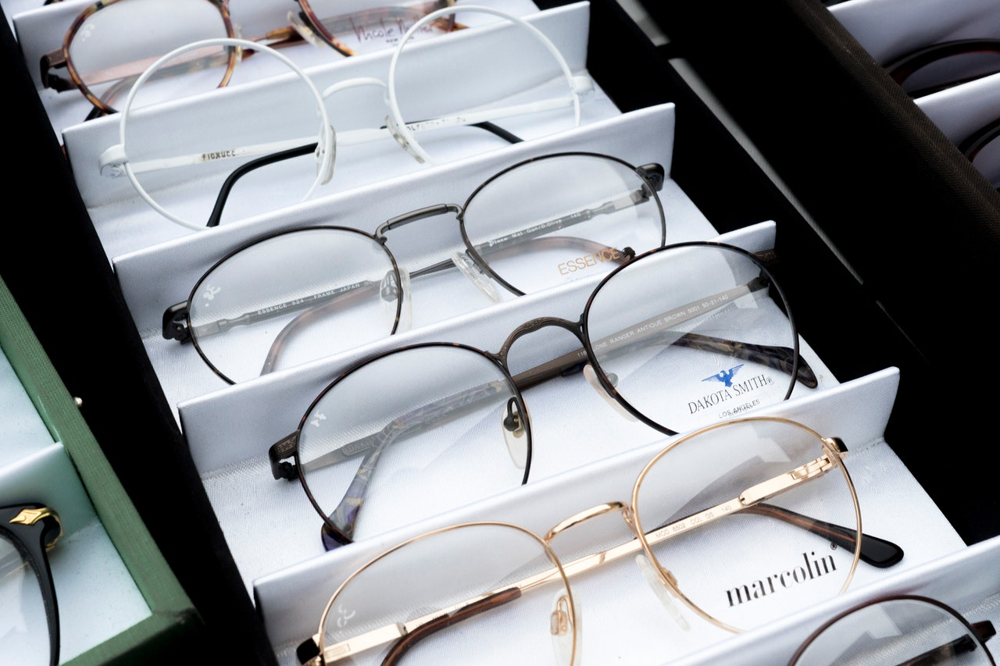

Our Services
We offer excellent comprehensive eye checkup in the comfort of your home with no hassles.
Refraction
This is a processs of determining the corrective lens power a person would require to provide the best corrected vision, maximum comfort and to prevent further eye strain.
Contact lens clinic
We help determine the power of the contact lens a person would require, we ensure the person gets the best fit to avoid discomfort. Not one size fit all. We also determine if a person meets the requirements for contact lens wear. As well as educating you on the use and care.
Treatment of ocular diseases
We diagnose and treat minor ocular diseases like allergies, bacterial and viral infections. We also diagnose other eye condittions like glaucoma that could be potentially sight threatening.
Sales of digital glasses
Computer vision syndrome could be very disturbing causing discomfort leading to o eye strain, headaches, fatigue and more. This affect job performance leading to low productivity. We also have devices for improved night vision and elimination of glare.
Sales of quality frames
We sell quality fashionable and optical frames thats best suited for different purposes.